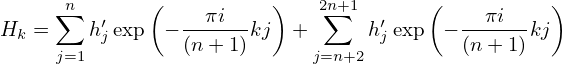

In order to solve the linear algebraic equations (49) for hj, multiply both sides of each equation by exp and then add all the equations together, which yields
|
| (66) |
Interchanging the sequence of the two summation on the right-hand side, equation (66) is written
|
| (67) |
Using the fact that (verified by Wolfram Mathematica)
|
| (68) |
where δjJ is the Kroneker Delta, equation (67) is written
|
| (69) |
i.e.,
 | (70) |
which can be solved to give
 | (71) |
Equation (71) is the inverse DFT.